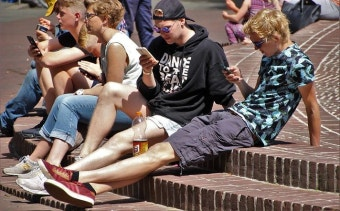
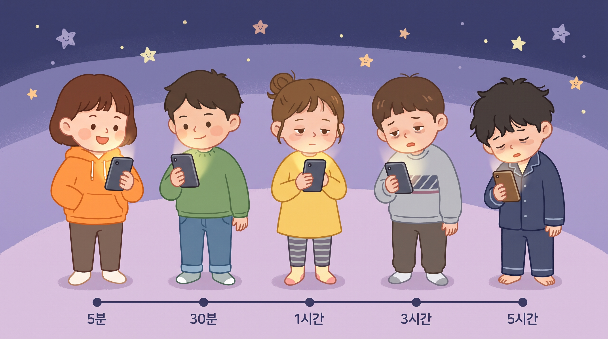

12조 · 학년차이 4인방
디지털 발자국 · 인터넷 사용시간 줄이기
과학 캠페인 발표자료
발표 순서
우리 주변을 살펴보면
아마도 유튜브, 인스타그램 같은 인터넷을 하고 있을 것입니다.

먼저 알아보기
인터넷 사용시간을 뜻하는 말입니다.
우리가 인터넷을 사용하면 발자국이 생긴다고 표현해요.
그래서 우리는 "발자국을 지우자!"라고 생각하게 됐어요.
하루 평균 스마트폰 사용시간 · 출처: 방송통신위원회 (2019년 10월)

퀴즈 1 · 10초 안에 맞는 답을 눌러 잡아요!
퀴즈 2 · 10초 안에 맞는 답을 눌러 잡아요!
우리에게 남긴 질문
여러분도 우리와 함께 시작해 봐요!
우리의 실천 약속
목표를 정해야 지키기 더 쉽다!
30분 이상 연속해서 인터넷을 보면 눈과 몸이 쉽게 지쳐요!
잘 때 폰 보는 것이 가장 좋지 않아요!
공부할 때는 완전 차단!
다른 활동을 열심히 해야 잊기 쉽다!
실천하면 생기는 변화
눈아, 쉬자!
우리 모두 발자국을 줄여봐요!
감사합니다!